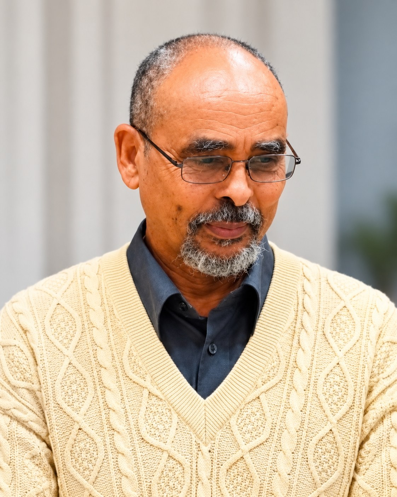

መእምር በኰረጽዮን ዘርአ ዮውሃንስ
Me'emir Bokrezion Zera Yohannes
Educator • Linguistic Researcher • Cultural Historian

Background and Intellectual Formation
Me'emir Bokrezion Zera Yohannes is an Eritrean educator, linguistic researcher, and cultural historian whose work is centered on Tigrinya, Geʿez, philology, Semitic linguistics, historical interpretation, and the preservation of the linguistic and cultural traditions of the Horn of Africa.
His intellectual formation reflects a combination of traditional Geʿez learning, long-term language teaching, independent scholarship, and public historical research.
According to Bokre Academy, he has approximately 40 years of experience teaching Tigrinya and around 20 years of academic study and research in fields including Tigrinya, Geʿez, philology, Egyptology, Semitistics, and Islamic studies.
The same source describes his early formation in a monastic environment in Eritrea, where he studied Geʿez and was exposed to traditional systems of learning. These biographical details represent his own professional and educational presentation and are best understood as part of his self-documented intellectual background.
Traditional Learning and Cultural Memory
His autobiographical teaching adds further depth to that record. Across his public lectures, he reflects on childhood, village life, traditional upbringing, monastic education, and later experiences in important cultural and urban centers.
His recollections describe an educational environment in which Geʿez, Fidäl, reading, manuscript culture, disciplined study, oral transmission, and inherited forms of knowledge were closely connected.
These experiences appear to have shaped the method he later developed as a teacher and researcher: one that treats language not simply as a means of communication, but as a repository of history, memory, identity, and intellectual inheritance.
Language Teaching and Cultural Education
His work as a language educator is also documented outside his own platforms. In 2010, a German local newspaper reported that Zera Johans Bokrezion taught a year-long Tigrinya course for Eritrean and Ethiopian children in Neu-Isenburg.
The course combined language instruction with cultural education, reflecting a long-standing commitment to intergenerational transmission and the preservation of mother-tongue knowledge within the diaspora.
Scholarly Activity
His participation in formal scholarly activity is independently documented.
At the 15th International Conference of Ethiopian Studies, held at the University of Hamburg in 2003, Bokrezion Zera Yohannes presented a paper titled “Incorporation of Tigrinya vocabulary into Amharic” in the Languages and Linguistics section.
This places him within an international scholarly forum concerned with language, history, philology, archaeology, culture, and related fields of Horn of Africa studies.
Areas of Research
His public teaching and research span a broad but interconnected range of subjects, including Tigrinya linguistic history, Geʿez language and textual traditions, philology, etymology, Semitic language comparison, the development of writing systems and Fidäl, cultural memory, oral tradition, religious and intellectual history, and the historical identity of Horn of Africa communities.
Intellectual Method
A defining feature of his work is the way he brings together language, historical memory, textual interpretation, oral knowledge, and cultural continuity.
His approach frequently moves between etymology, comparative linguistics, inherited terminology, historical texts, traditional narratives, and questions of identity.
Rather than isolating language from history, he treats linguistic evidence as part of a wider cultural archive through which older patterns of thought, naming, belief, and collective memory may be examined.
Public Teaching and Preservation
His work reflects a sustained concern with the preservation of knowledge that he considers endangered, misunderstood, or insufficiently represented in conventional historical narratives.
Through teaching, recorded lectures, and educational materials, he has sought to preserve linguistic forms, interpret older traditions, and encourage younger generations to engage critically with the intellectual heritage transmitted through Tigrinya, Geʿez, and related traditions.
Through Bokre Culture & History , Me'emir Bokrezion Zera Yohannes has developed an extensive public archive of lectures addressing Tigrinya, Geʿez, writing systems, cultural history, identity, oral memory, and inherited intellectual traditions.
His Contribution to THE SABAEAN UNIVERSE
Within THE SABAEAN UNIVERSE, his contribution is documented as a distinct body of intellectual and interpretive work.
His own teachings, linguistic interpretations, historical arguments, and reconstructions are presented in their own terms while remaining clearly differentiated from independent archaeological, epigraphic, linguistic, and historical verification.
Professional Summary
Me'emir Bokrezion Zera Yohannes is an Eritrean educator, linguistic researcher, and cultural historian specializing in Tigrinya, Geʿez, philology, Semitic linguistics, and the historical traditions of the Horn of Africa. His work draws on decades of language teaching, traditional Geʿez education, independent research, and public historical instruction. Through Bokre Academy and the Bokre Culture & History teaching platform, he has developed a substantial body of work addressing language, writing systems, cultural history, identity, oral memory, and inherited intellectual traditions. His scholarship is distinguished by an effort to connect linguistic analysis with historical memory and cultural continuity, making language itself a central source for the study and preservation of the region's intellectual heritage.
Sources and Documentation
- Bokre Academy — professional and educational biography of Me'emir Bokrezion Zera Yohannes.
- Bokre Culture & History — autobiographical and educational lecture archive.
- 15th International Conference of Ethiopian Studies, University of Hamburg, 2003 — Languages and Linguistics program.
- Neu-Isenburg community reporting, 2010 — documentation of Tigrinya language teaching and cultural education.